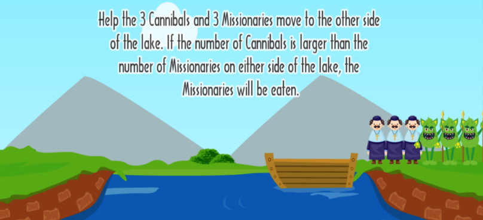

CPSC 481
This class utilized AIMA Python to teach the basics of using computers to simulate human intelligence. I learned about production systems, pattern recognition, problem solving, searching game trees, knowledge representation, and logical reasoning. I was also given introductions to various AI workspaces.

This projects introduced the basics of AI decision making by utilizing min/max trees. By evaluating the state space of the problem and assigning positive and negative scores to correct moves/dead end moves respectively, we were able to create an AI that safely escorts the missionaries across the river while following the rules to prevent them being eaten by the cannibals.

The Sliding 8-Tile puzzle is a well known and simple puzzle. Here we learned how to utilize different search algorithms for AI decision-making, and specifically, in this project: the breadth first graph search.
My term project for the Artificial Intelligence class. Here, my groupmates and I utilized a genetic algorithm to create an AI that is able to crack any code in a game of mastermind! The game comes with customizeable parameters and is able to guess codes in 4-5 turns on average. Try it yourself here!